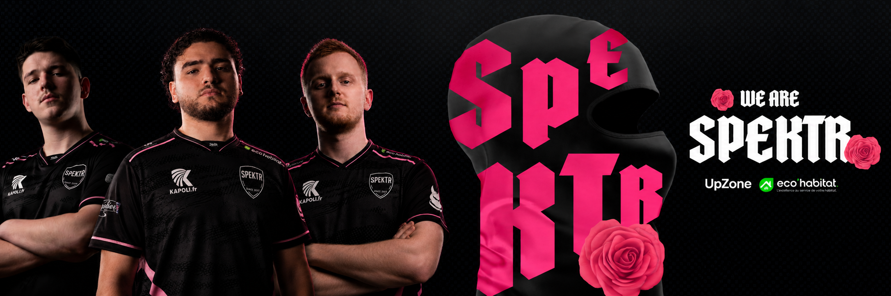

Qui sommes-nous
Jeune structure. Identite claire.
We are Spektr
Competition, creation, communaute.
Fondee en 2023, Spektr avance etape par etape avec une ambition simple: construire un collectif identifiable, proche de ses joueurs, de ses createurs et de sa communaute. Une direction artistique forte, des profils investis, une envie claire de performer.
Performance
Nous structurons un roster competitif avec des joueurs capables de progresser, d'assumer la pression et de representer Spektr dans les moments importants.
Image
La charte Spektr n'est pas un decor. Elle porte notre attitude: sombre, rose, directe, reconnaissable, avec une presence forte sur chaque support.
Collectif
Spektr rassemble joueurs, createurs, academy, partenaires et proches du projet. Notre force vient de cette proximite et de cette regularite.
Notre trajectoire
Avancer petit. Frapper juste. Rester Spektr.
Spektr ne cherche pas a paraitre plus grand que ce qu'il est. On pose des bases nettes: un roster lisible, une image forte, des partenaires utiles et une communaute qui se reconnait dans le projet.
Voir le rosterDes profils identifies, suivis et mis en scene avec coherence.
Noir, blanc, rose. Une presence reconnaissable sur chaque prise de parole.
Un club qui grandit avec ses joueurs, createurs et partenaires.
Histoire
Les etapes
Naissance de Spektr
La structure pose son nom, son blason et une premiere vision: rassembler des profils competitifs autour d'une identite forte.
Premiers codes visuels
Le noir, le blanc et le rose deviennent les marqueurs du projet, avec une approche plus nette du contenu, du shop et de l'image equipe.
Nouvelle ere Spektr
Roster elargi, academy, createurs, partenaires et calendrier: Spektr structure son ecosysteme pour passer un cap sans perdre son ADN.
Rejoindre l'orbite